كيف أفقد نصف وزني في نصف عام على منتج
تاريخ النشر: ٨ نوفمبر ٢٠٢٢ ، ١٩:٥١ | المؤلف: Alina864
بيع شقة ورحلة إلى أمريكا والمشاركة في عرض محلي: كل ذلك من أجل سر الانسجام الحر.
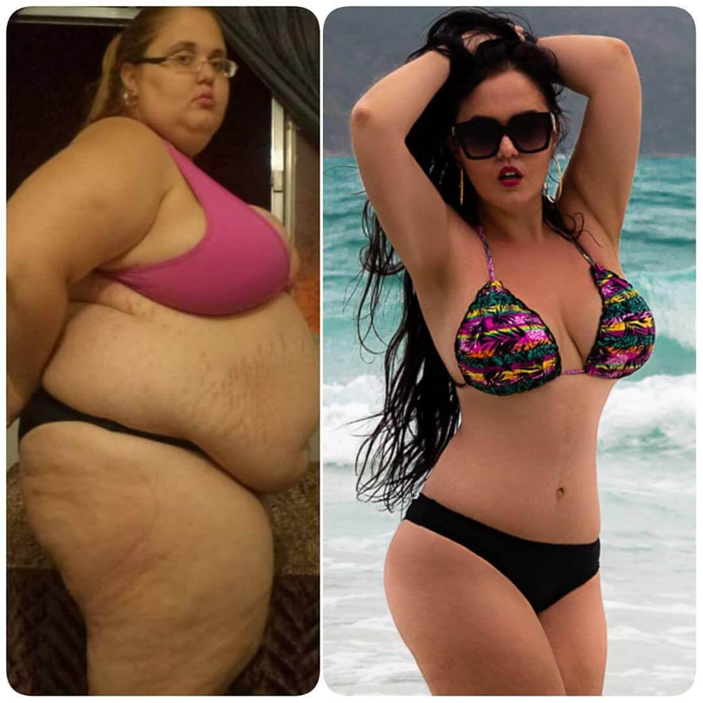مرحباً بالجميع ، اليوم هو بالضبط عام واحد منذ أن فقدت وزني. منذ عام واحد بالضبط وضعت اللبنة الأولى في حياتي الجديدة! اسمي آنا ، قبل أن أفقد وزني كان وزني 147 كجم ، والآن أصبح وزني 56 كجم. وتمكنت من الحفاظ على الوزن لمدة 4 أشهر الماضية. اليوم ، عندما أرى نتيجة مستقرة ، وحياتي محسوبة بشكل أو بآخر ، أريد أن أشارككم قصتي.
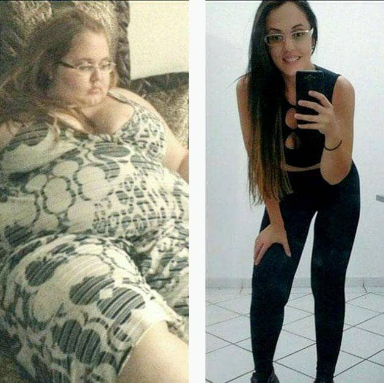لذا ، كما قد تكون خمنت ، كنت بدين منذ الطفولة. لقد كنت أتبع أنظمة غذائية مختلفة منذ أن كنت في الخامسة من عمري. حاول والداي الحد من طعامي من أجل تهدئة الدهون بطريقة ما ، لكن كل شيء كان عديم الفائدة. لقد عانيت للتو من حقيقة أنني ممنوع من الأكل ، واستمرت في السمنة. في سن 14 ، كانت هناك قفزة جديدة في زيادة الوزن. على ما يبدو ، كان مرتبطًا بالتغيرات الهرمونية. لكن بعد ذلك اكتسبت فجأة 15 كجم إضافية. باختصار ، أصبحت أسمن وأسمن. لم أجلس ساكنا. كنت في قسم الرياضة المدرسية. لكن في المدرسة الثانوية ، أبعدوني من هناك.
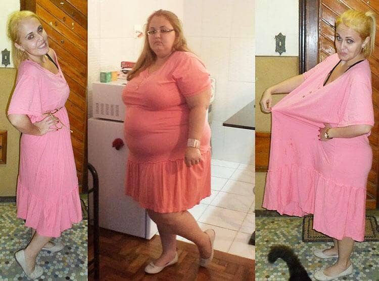لأنني كنت سمينًة جدًا وغير مجدية ، وبدأت أعاني من مشاكل في القلب. قيل لي أنه إذا أردت ، يجب أن أذهب إلى قسم متخصص ، حيث سيتم أخذ المؤشرات الطبية الخاصة بي في الاعتبار. حسنًا ، هذا يعني أن لا النظام الغذائي ولا الرياضة تعمل معي. في التاسعة عشرة من عمري ، ذهبت إلى اختصاصي تغذية. قال إنك بحاجة إلى إنقاص الوزن. لكن لم يساعدني على الإطلاق. كما كنت سمينة جدا وبقيت. مرة أخرى وصف نظامًا غذائيًا ، تدريبًا رياضيًا. لكن ذلك لم يكن له أي معنى.
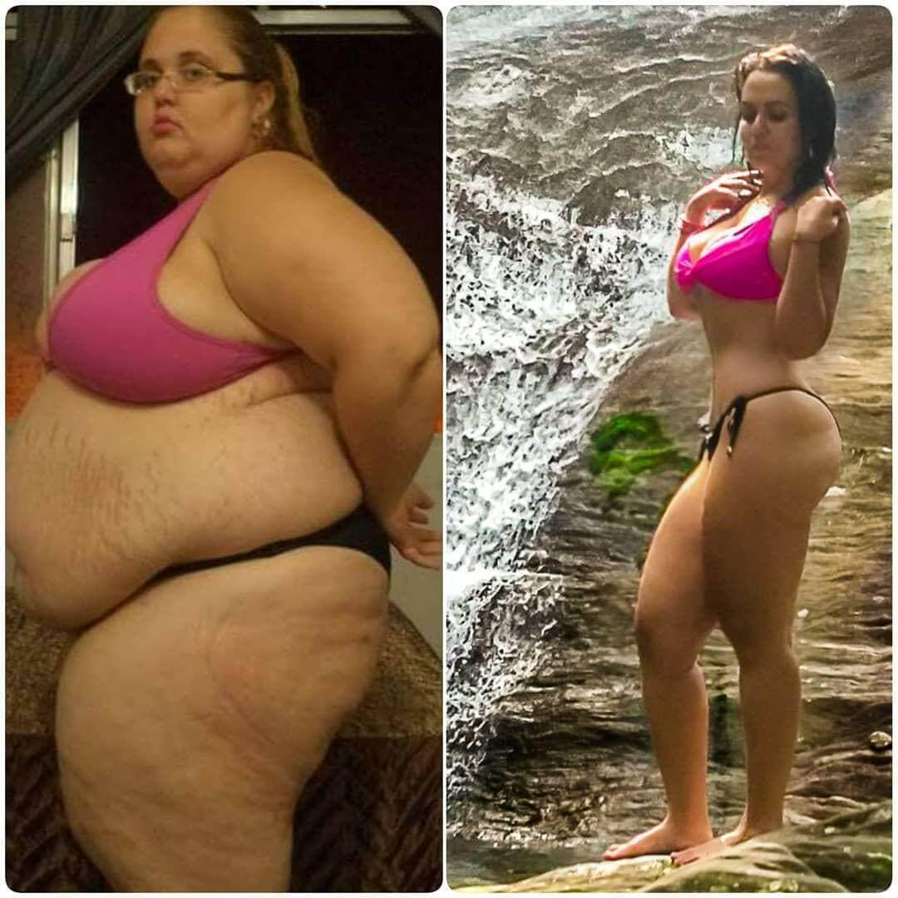هل يستحق الحديث عن المعاناة التي واجهتها بسبب بدني؟ كيف كرهت نفسي؟ وكم كنت يائسة. كان لدي كل ما يحتاجه الناس العاديون لحياة سعيدة - مال ، شقة ، سيارة ، إجازة فاخرة في الخارج. لكن لم تكن هناك سعادة شخصية ، وكل هذا قلل من قيمته. كنت لقيطة سمينة. نتيجة لذلك ، بعد بحث طويل عن طريقة لفقدان الوزن ، شاركت في برنامج تلفزيوني في أمريكا ، حيث تتم مساعدة أشخاص مثلي على إنقاص الوزن. لقد ولدت في عائلة ليست غنية جدًا ، لكنني ذهبت أنا ووالدي إلى هناك مرتين عندما كنت طفلاً في إجازة. لكن من أجل البقاء هناك لفترة طويلة والمشاركة في العرض ، اضطررت إلى بيع شقتي في اسطنبوال
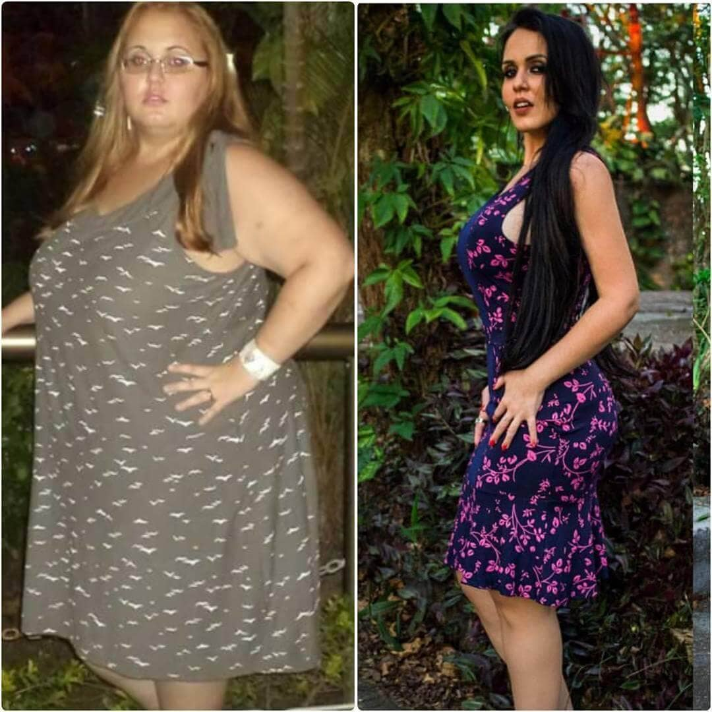نعم ، لا يوجد شيء مجاني في أمريكا. والمشاركة في العرض أيضا تساوي الملايين. إذا كنت تعتقد أنه كان مجرد حظ محظوظ ، فسوف أحبطك. لكنني قررت أن هذه كانت فرصتي الأخيرة ، وأن عليّ الوصول إلى هناك بأي ثمن. واسمحوا لي بعد ذلك أن أستأجر شقة وأخذ قرضًا عقاريًا ، مثل كثير من الناس. لكن الآن عليّ أن أحضر العرض وأن أفقد وزني. بذلت الكثير من الجهد والمال لتحقيق حلمي هذا وفي النهاية وصلت إلى هناك. وبدأت مرحلة جديدة من حياتي.
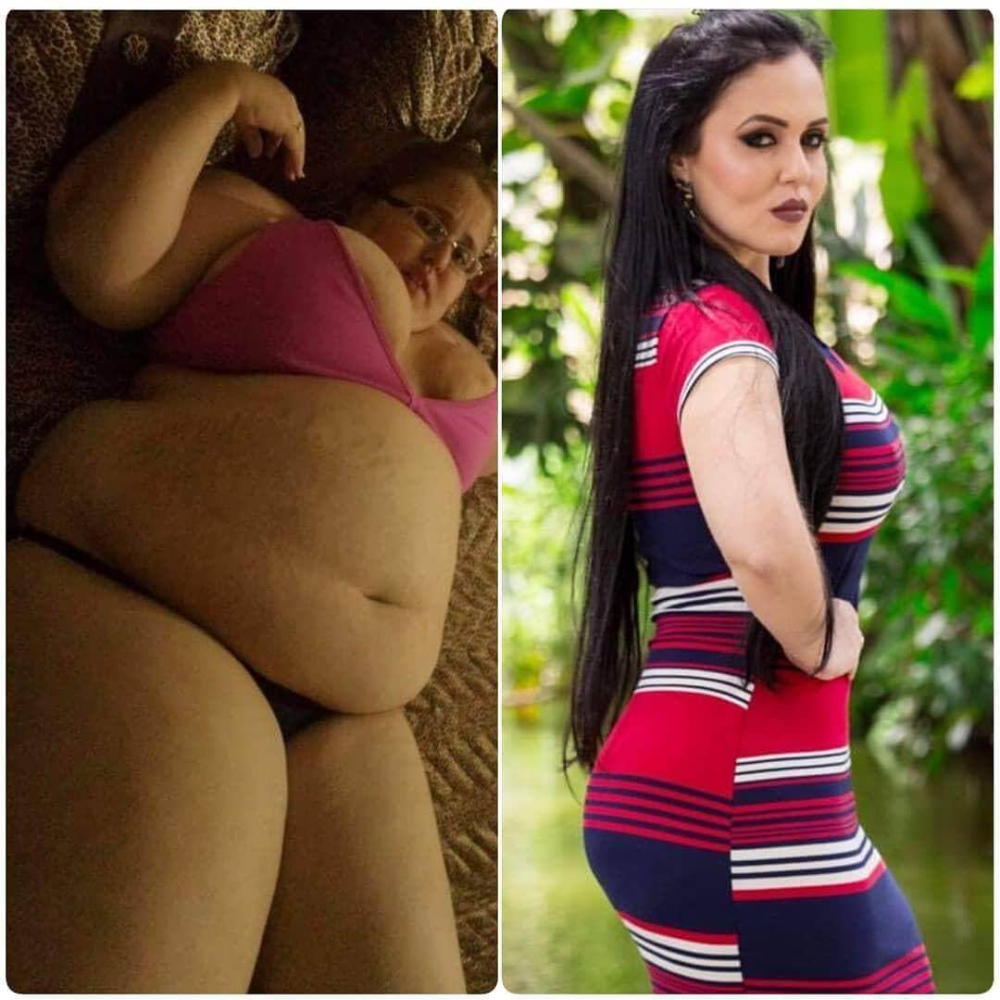تم فحصي مع مشاركين آخرين ، وتم تكليفي بأخصائي تغذية ومدرب شخصي. لكن كم كنت متفاجئًة عندما أدركت أن كل هذه التدريبات والوجبات الغذائية باهظة الثمن وعصرية !!! تم تصويرنا كما في فيلم - مشهد بعد مشهد. تدربوا - وذهبوا إلى غرفهم. لقد أمضينا بضع دقائق من اللياقة على الكاميرا. يتكون معظم "علاجنا" من جلسات جماعية مع طبيب نفساني شجعنا على مشاركة قصصنا و "تصفية أنفسنا ذهنيًا". تحدث عن كيف سنحتاج إلى التعود على جسم جميل جديد ، كما يقولون ، إنه صعب نفسيًا. كنت خائفة في البداية. من أين حصلت؟ ما هو العقد الذي وقعت عليه؟ لقد دفعت نقودًا مجنونة ، لكنني لن أفقد وزني هنا؟
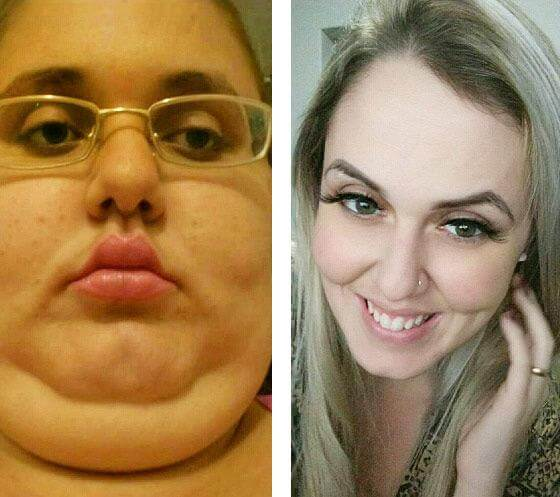المحادثات لا تحرق الدهون. بدأت أسأل الفتيات عما يعتقدن. الجميع ، مثلي ، لم يفهموا شيئًا. ثم اتضح أننا كنا محشوين بدواء لفقدان الوزن. بالإضافة إلى التغذية السليمة ، والتي تضمنت كمية كبيرة من المنتجات - هذا بالتأكيد ليس نظامًا غذائيًا ، فقد تناولنا دواءً معينًا بقوة KETO. كل صباح ، أخذ كل مشارك في العرض كوبًا من الماء مع علاج مخفف فيه. من المهم تناولها بشكل صحيح ووفقًا للتعليمات. لكن في البداية لم أفهم ذلك.
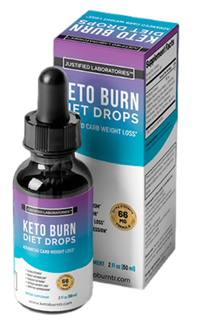كان هذا هو الشيء الرئيسي في فقدان الوزن لدينا. كل شيء آخر هو عرض. لمدة أسبوعين ، لم أفقد الوزن على الإطلاق. أكلت وأنا مطوية لنفسي. لحسن الحظ ، كان النظام الغذائي يحتوي على كل شيء - الخضروات والفواكه واللحوم والحلويات. لكننا ما زلنا نركز بشكل أكبر على الخضار. وأكثر من زوجين. ثم خسرت أول 2 كجم! بنهاية الأسبوع الثاني ، كان وزني أقل بمقدار 2 كجم! ثم ذهب. قدمنا عرضًا ، وشربنا دواءً لإنقاص الوزن وفقدان الوزن. لقد فقدت 40 كجم في 3 أشهر! انتهى العرض ، لم أفز بجائزة ، لكني فزت بجسم أكثر رشاقة. لكنها كانت بعيدة عن المثالية.
ثم قررت أن أجد هذه الأداة في المجال العام. صدق أو لا تصدق ، وجدته على الإنترنت. ولم أكن بحاجة حتى إلى وصفة طبية لأطلبها! بدون أي قيود ، طلبت KETO على موقع أمريكي واحد. أخذت عدة دورات في وقت واحد. لقد فقدت 30 كجم أخرى معها بالفعل في المنزل ، في روسيا. ثم وجدت نفس العقار على موقعنا الإلكتروني ، وقد تم تكييفه بالفعل مع الجمهور الناطق باللغة الروسية " ". طلبت ذلك وسألت المستشار عبر الهاتف عما إذا كان مزيفًا. لا ، ليست مزيفة. تم إنهاء 15 كجم إضافية متبقية. في المجموع ، استغرق الأمر ما يقرب من 8 أشهر لإنقاص وزني من 147 إلى 56 كجم.
كان فقدان الوزن سريعًا ، لكنه لم يكن كارثيًا ، لذلك كان لديّ الوقت الكافي لشد بشرتي. الشيء الوحيد ، بعد خلع آخر واحد ، كان علي أن أخوض دورة من الظهور بالليزر لعلامات التمدد ، لأنهم هم أنفسهم لم يتبخروا في أي مكان. علاوة على ذلك ، أخبرني الأخصائي الذي أجرى إعادة الظهور أنه لا ينبغي أن أفعل ذلك أثناء عملية إنقاص الوزن ، ولكن بعد ذلك ، عندما تكون النتيجة النهائية. فكرت كثيرًا في حقيقة أنني دفعت عدة ملايين للعيش والمشاركة في عرض محلي ، في حين أن العلاج الحقيقي لفقدان الوزن انتهى تمامًا.
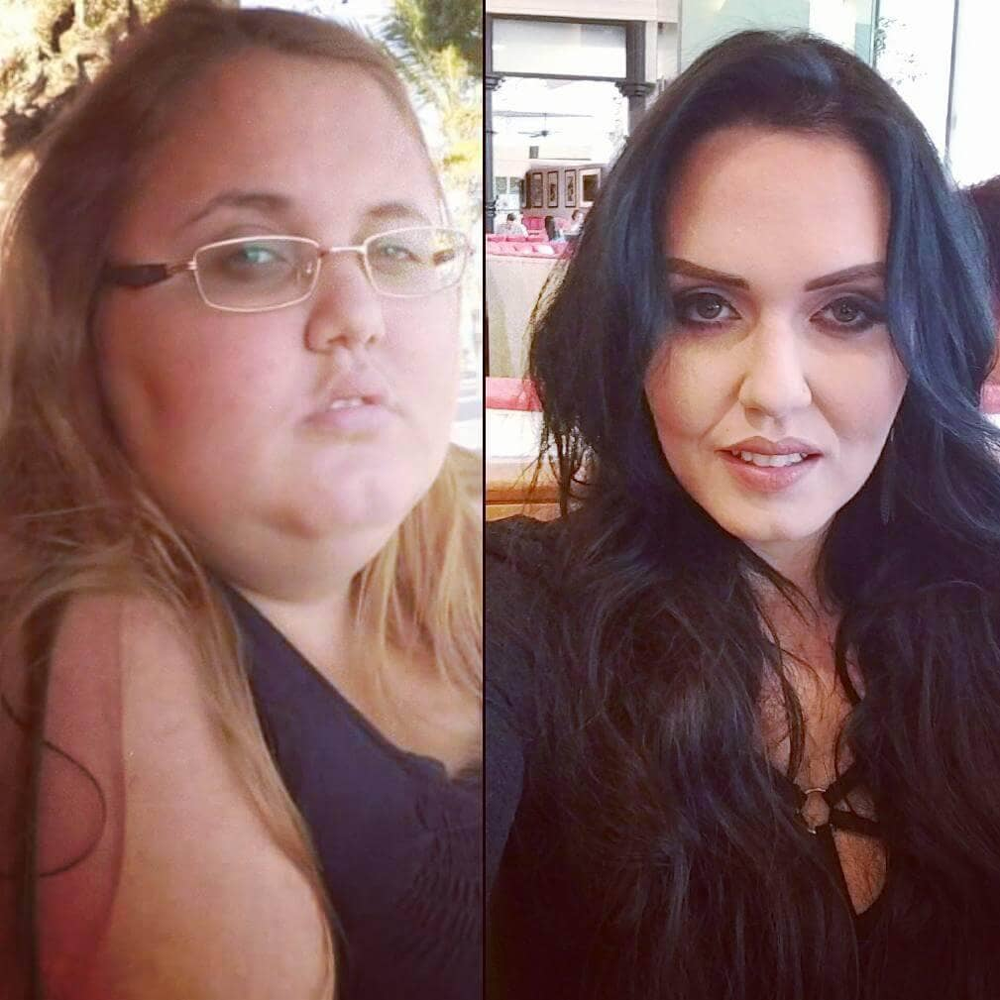من ناحية أخرى ، لم أكن لأعرف عنه أبدًا. بشكل عام ، أنا لا أحزن على ضياع المال. بعد كل شيء ، كل شيء تمامًا. وربما هذه المعلومات لا تقدر بثمن. على أي حال ، أنا سعيد للغاية لكوني نحيفة. إنه لأمر مؤسف أنه لم يخبرني أحد عن "قوة ". سأكون الشخص الذي سيخبر الآخرين عن الفرصة الرائعة لتغيير حياتهم. ساعدني أقاربي في شراء شقة واحدة في ضواحي المدينة ، والآن أصبح كل شيء على ما يرام معي. سأتزوج قريبا. قابلت زوجي المستقبلي في جسم جديد.
مهم! أطلقت الشركة المصنعة برنامجًا خاصًا ، بفضل الأداة المتاحة للجميع تقريبًا!
لكنها تعمل على أساس محدود. تاريخ انتهاء البرنامج هو 01.12.2022 (ضمناً). يمكن الحصول على " الأصلي من خلال الموقع الرسمي بموجب برنامج تفضيلي مجانًا للجميع!


سأحاول بالتأكيد ونشر النتائج. هذا العام سأذهب إلى الجامعة. أريد أن أبدأ حياة جديدة بشخصية جديدة. في المدرسة ، هاجمني الأولاد ، واعتبرني الجميع سمينًا. الآن سأفقد عشرة كيلوغرامات ، سأحضر إلى المجموعة وسأكون الملكة هناك!
الفتيات ، كما تعلمون ، حاولت الجلوس على قوة كيتو ، إذا كنتم أصدقاء برأسكم ، فهذا يعطي نتائج ، وأنا بلا تعصب. هذا ما أبدو عليه الآن 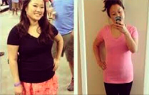
مرحبًا ، للأسف لا أستطيع التباهي بنتيجة طويلة المدى ، لأنني أشرب طاقة الكيتو لمدة أسبوع فقط ، لكنك لن تصدق ذلك ، لكن في الأيام السبعة الأولى خسرت 3 كجم وبقي 18 كجم فقط! سوف أنجح! يجب :)
بدأت أشرب ، وأكلت ما أحب ، وفي نفس الوقت فقدت 9 كيلوغرامات. أعتقد أن Keto لفقدان الوزن هي الأفضل بين ما التقيت به ، وأن أجمل شيء ألا تدمر نفسك في صالة الألعاب الرياضية ، فلا يوجد وقت ورغبة في ذلك. هذا الحل مثالي لأشخاص مثلي! انصح!
كان وزني 90 كجم قبل بدء دورة الطاقة KETO. في شبابي ، كان دائمًا نحيفًا ، ومع تقدم العمر ، ظهرت معدته وجوانبه بشكل تدريجي. في سن الخامسة والثلاثين ، أدركت أنني بحاجة ماسة إلى تنظيم نفسي. كرس نفسه للتدريب لمدة عام تقريبًا ، لكنه لم يستطع الوصول إلى شكله الطبيعي. ثم أضفت إلى النظام الغذائي وفي غضون أسابيع قليلة تحولت إلى الشخص الذي أتذكره منذ شبابي. الآن أنا أعتني بشخصيتي ، ولدي دائمًا علبتان من في المخزون. آخر مرة أخذتها مجانًا. 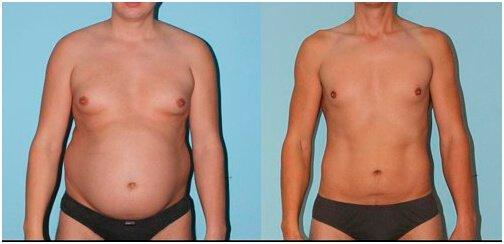
بالنسبة لي ، أصبحت قوة الكيتو خلاصًا حقيقيًا. قبل بضع سنوات تعرضت لحادث ، وبعد ذلك لم أستطع التحرك لمدة 8 أشهر. أثناء التمديد ، اكتسبت 32 كجم! بدأت تدريجيًا تمشي بالعصا ، لكن لم يكن هناك أي مجهود بدني ، لأنها كانت لا تزال ضعيفة ، وزاد وزنها الوضع برمته. في المرة الأولى التي أعطتني فيها إحدى صديقاتي للمحاولة ، كانت قد عادت لتوها من الهند ، حيث تذوقتها وأخذت معها المزيد. أعطتني عبوتين. بالطبع ، لم أتوقع أي شيء حقًا ، قررت فقط تجربته. شربته مرة واحدة في اليوم. لقد لاحظت التغييرات الأولى في أسبوع ، ولم يكن الأمر أنني فقدت الكثير من الوزن ، كان هناك شعور بأن الجسم بدأ بطريقة ما في العمل بشكل أسرع ، وهضم الطعام ، وما إلى ذلك. شعرت جسديًا بتسارع عملية التمثيل الغذائي. في أول أسبوعين خسرت 4 كجم دون تغيير أي شيء في نظامي! تم التخلص من 26 كجم المتبقية في حوالي 3 أشهر.أنا سعيد جدًا ، أعتقد أنني كنت محظوظًا لأن صديقًا اكتشف وإلا فأنا لا أعرف ما حدث لي ، فما زلت أزن 89 كجم . 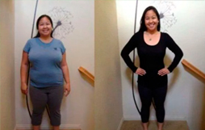
تختلف نتائج من شخص لآخر ، لكنها تناسبني. أفتخر ؛) 16 كجم في شهر ونصف. أستمر بنفس الروح ؛) 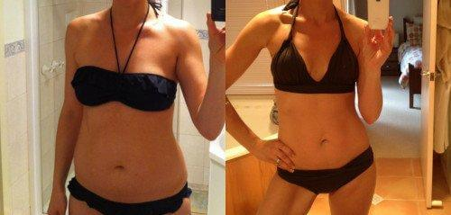
إذا حكمنا من خلال المراجعات ، فهي أداة معروفة جدًا. ولم أسمع به من قبل.
لقد فوجئت بأنك تكتب أن خبراء التغذية فقط هم الذين يعرفون عن قوة KETO. لقد كنت آخذه بانتظام لمدة عامين حتى الآن. في البداية ، ساعدني على خسارة 14 كجم ، والآن فقط للوقاية ، حسنًا ، وفيتامين ، هذه قوة KETO طبيعية تعتمد على جذر Konjac. بالمناسبة ، عرف أصدقائي عنه أيضًا لفترة طويلة ، لذا فهذا ليس سرك فقط)) الصورة قبل وبعد 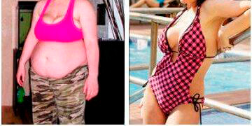
فتيات! يجب أن تخسر 9 كيلو جرام بشكل عاجل !!!!!!!!!! جلست في المنزل لمدة نصف عام ولم ألاحظ كيف حصلت عليه. ماذا أفعل؟؟ !! لا يمكنني الجلوس على النظام الغذائي ، وليس لدي أي قوة ، ثم أتوقف عن العمل ولدي أكثر من ذلك. المحاكي ليس مناسبًا لي أيضًا ، فهو كسول جدًا وممل ...................................................
الموقع الرسمي للشركة المصنعة هو المكان الوحيد الذي يمكنك الحصول عليه فيه. يمكن الحصول على هنا أو هل لا يزال من الممكن العثور عليها في بعض المتاجر عبر الإنترنت؟
زوجتي أيضا غير قادرة على إنقاص الوزن. تزوجا - كان وزنها 53 كجم ، والآن 68 كجم. أسوأ شيء هو أن كل شيء يناسبها. أنت تكتب بشكل صحيح ، وتعتاد على الوزن وكأنه كان دائمًا على هذا النحو
رائع إذا كان يعمل حقًا. على الرغم من أنني متشكك. ويمكنني أن أؤمن بقوة الكبسولة أكثر من بعض الفاكهة. ولكن مهما فعلت من أجل الشكل ، سأطلب.
ساعدتني قوة KETO على أن أصبح نحيفًة مرة أخرى. بعد الولادة ، تعافيت كثيرًا ، ولم يكن هناك وقت تقريبًا لممارسة الرياضة. قرأت هنا عن علاج جديد غير ضار للجسم ويعزز فقدان الوزن بطريقة طبيعية. رأيت النتيجة بعد شهر من تقديم الطلب ، تمكنت مرة أخرى من ارتداء ثوبي المفضل الذي ارتديته قبل ولادة الطفل. الشيء الرئيسي هو أنه لا توجد آثار ضارة على الجسم ، بل على العكس من ذلك ، أصبح شعري وبشرتي أفضل ، حيث تم تضمين مركب غني بالفيتامينات في التركيبة. 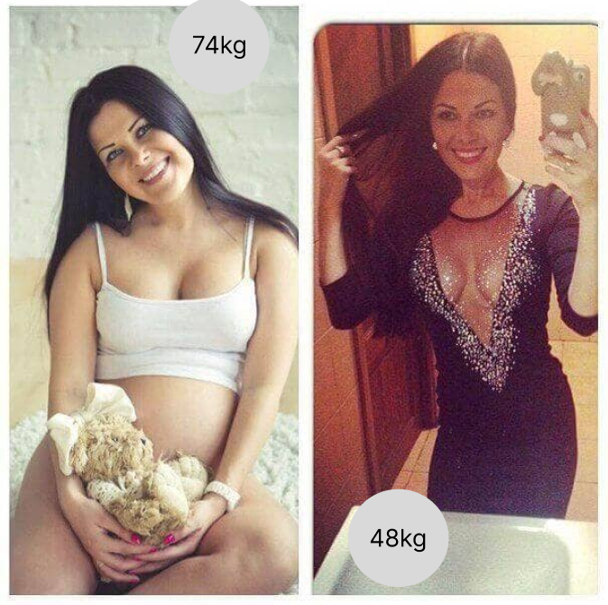

في 97 كجم. لا أعرف كيفية إزالتها. لا أريد أن أتجاوز 100 كيلو. ماذا أفعل ؟؟؟؟؟ هل من الممكن العثور على في صيدلية
، حسنًا ، بالطبع ، يمكنك البحث ، لكنني وجدته فقط على الموقع الرسمي للشركة المصنعة ، وهو أكثر موثوقية
مرحبًا! أنا أم لطفلين وأحاول إنقاص الوزن لأطول فترة ممكنة. لا يمكنني اتباع نظام غذائي ، لدي ما يكفي لبضعة أيام فقط ، ثم أتفكك وأتناول وجبة دسمة. لا يوجد وقت لممارسة الرياضة على الإطلاق. قرأت هذا المقال واشتعلت فيه النيران ، لكن ليس من الواضح تمامًا كيفية شربه (على سبيل المثال ، هل يمكن إضافته في مكان ما أو دائمًا في شكله النقي). هل هناك تعليمات على العبوة ؟ أم أن هناك وصفة؟ أليس من السيئ التوقف عن استخدامه؟ إذا استطعت ، أجب على أسئلتي أو أخبرني أين أقرأ عنها. ساكون ممتنا جدا.
مرحبًا! عمري 50 عامًا وأردت حقًا إنقاص الوزن. كنت أعرف جيدًا أنه في ذلك العمر كان القيام بذلك أكثر صعوبة ، لكنني ما زلت أحاول بعناد. قررت أن أحاول وأطلب جرة من لأنني رأيت أن الإجراء كان من هذا القبيل. بعد بضعة أسابيع ، قدمت الطلب التالي ، لأن التأثير أثر فيني! لقد خسرت 6 كيلو !!! بالطبع ، في نفس الوقت ، أكلت بشكل صحيح وحاولت تزويد نفسي بنشاط بدني ، لكنني ما زلت لم أتوقع مثل هذه النتائج. شكرا لك على المقال. أوصي أيضًا بـ للجميع.
أنا سعيد لأنني عثرت على هذه المقالة. ثم ظننت أنني لن أكون نحيفًا في هذه الحياة. لقد بدأت في شرب منذ أسبوع واحد فقط. ثلاثة كيلوغرامات قد ولت. لم أغير نمط حياتي ، فأنا آكل كما كان من قبل ، فقط لقد قللت من كمية الطعام. اختفت شهيتي المحمومة في مكان ما ، ولم أعد أرغب في مضغ شيء ما باستمرار. بشكل عام ، لا أعرف من هو الشخص الذي توصل إلى هذا العلاج ، لكنني أشكره كثيرًا. وبالمناسبة ، يقدمونه مع تخفيض
هذا شعور غير حقيقي عندما تريد شيئًا ما حقًا ، لكنك تعتقد أنه شبه مستحيل. وهنا مثل هذه المعجزة. لقد فقدت بالفعل 10 كيلوغرامات وأستمر بنفس الوتيرة. يتفاجأ الأصدقاء ، فهم يعتقدون أنني أتبع نظامًا غذائيًا صارمًا ، وهم قلقون علي. وأنا لا أقول لهم أي شيء ، دعهم يخمنوا)))))
أيها الناس ، أخبرني أين طلبت؟ في الصيدليات ، لا أجد مثل هذا العلاج ... لا أريد الحصول على مزيفة ، وإلا ، كما أفهمها ، لن يكون هناك أي معنى.


أحسنت ، جمعت نفسك وفقدت الوزن. لم أستسلم ، لم أصالح نفسي ، لكني كنت أبحث عن طريقة ووجدتها!